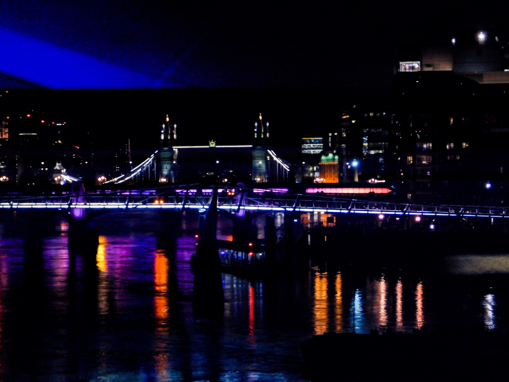

Author: Riccardo Randazzo
London is a city that never fails to impress. From its iconic skyline and rich history to its cutting-edge fashion, art, and food scenes, London blends the old and the new in the most spectacular way. Stroll along the Thames, admire the timeless beauty of Big Ben and Buckingham Palace, or lose yourself in the vibrant streets of Soho and Shoreditch. With its world-class museums, theaters, and a culture that celebrates diversity, London truly offers something magical for everyone — a place where every corner tells a story and every moment feels extraordinary.
The city hums before sunrise. A low buzz of buses, a shimmer of headlights on wet pavement, and Emma standing on the corner of King’s Cross, scanning for that flash of neon green. She spots it — a Lime bike leaning under a lamppost. Tap, unlock, click. The screen glows Ready to Ride. She pushes off, tires humming against the road, and the chill morning air rushes past. London unfolds like a movie reel — Georgian townhouses of Bloomsbury blur into the sleek glass lines of Fitzrovia. By the time she reaches Regent’s Park, the city is golden. Joggers pass, dogs bark, and sunlight cuts through the trees like spotlights on a stage. A left turn onto Marylebone High Street — the rhythm picks up. The scent of espresso drifts from café doors, shopkeepers roll up shutters, and London begins to move. She glides through Oxford Circus, the chaos somehow choreographed — red buses, black cabs, and a thousand footsteps keeping time with her heartbeat. Carnaby Street hits like a scene change: color, music, and motion everywhere. Street art flashes by, laughter bounces off the brick walls, and the sound of a guitar echoes from somewhere unseen. She smiles, weaving through the crowd, the Lime moving as smoothly as her mood. Down to the river — Westminster Bridge rising ahead. The skyline opens wide: Big Ben ticking in the distance, the London Eye turning slow and steady. She stops mid-bridge, breathless, camera in hand. The shot is perfect — the city glowing in morning light, endless and alive. She rides along the South Bank, the Thames sparkling beside her, the air alive with the pulse of Londoners and travelers. For a moment, she feels part of it all — the rush, the rhythm, the beauty in motion. By the time Emma docks the Lime near the Tate Modern, the sun is setting and the city is alive in lights. She looks back once, smiles, and thinks — this is how London was meant to be seen.